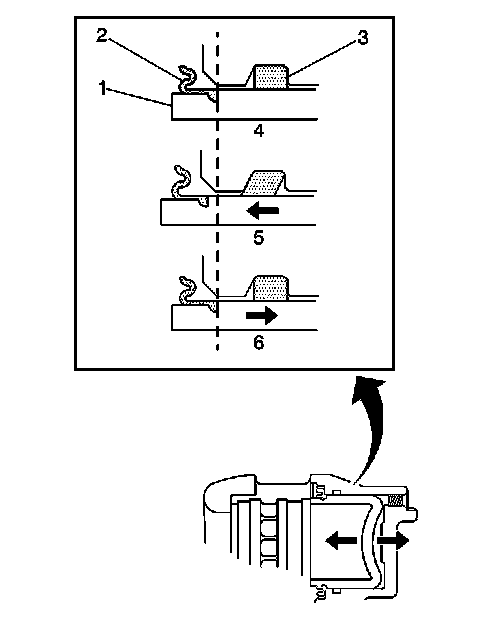

Hydraulic Brake Component Operation Visual Inspection
Hydraulic Brake Component Operation Visual Inspection

Caution: Refer to Brake Fluid Irritant Caution (Brake Fluid Irritant Caution) .
Notice: Refer to Brake Fluid Effects on Paint and Electrical Components Notice (Vehicle Damage Warnings) .
1. With the tire and wheel assemblies removed and the brake rotors retained by wheel lug nuts, visually inspect the caliper piston dust boot (2) sealing area to ensure that there are no brake fluid leaks.
2. If any evidence of a brake fluid leak is present, the brake caliper requires overhaul or replacement.
3. While the brake system is at rest (4), observe the position of the caliper piston (1) in relation to the caliper housing.
4. Have an assistant apply and release the brake pedal several times while you observe the operation of the hydraulic brake caliper.
1. Observe the caliper piston (1) for unrestricted and even movement during each apply of the brake system (5).
2. Observe the caliper piston (1) for an unrestricted and even return motion during each release of the brake system (6).
5. If the caliper piston (1) did not exhibit unrestricted and even movement during brake system apply and/or release, the piston square seal (3) may be worn or damaged and the caliper may require overhaul or replacement.